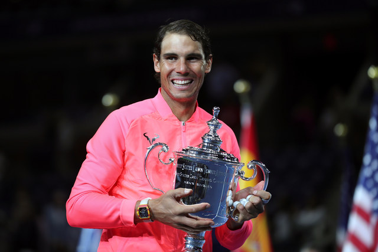

Nadal a timeless champion
“It was a great Test March Credit to Bangladesh the way they plaeyd. The fist innings the parntership between Shakib and Tamim set up the game for them.”
“We let ourselves down a bit in the fist innings with the bat. It was quite difficult batting in the second inning here and I thought we did quite well getting 240 in the end.”
“I thought the tail did a terrific job for us, they helped the batters out alot in this Test Match. It’s upon the batters to go out, especially in the first innings, to go and get a big score. That was probably the difference in the end.”